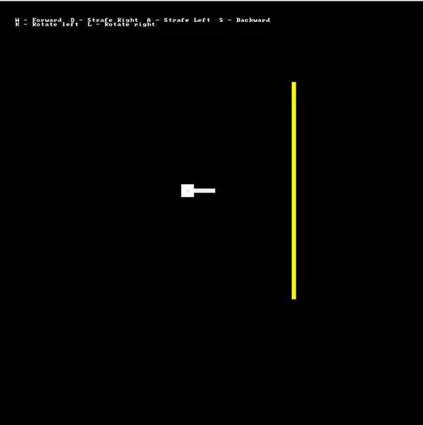
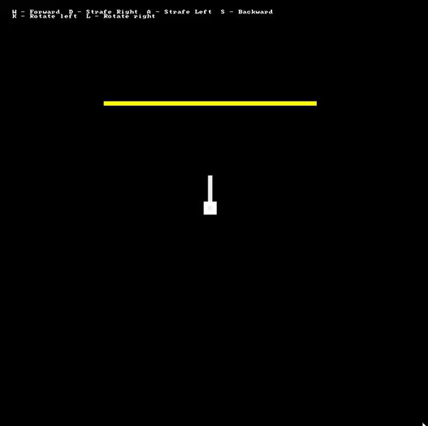
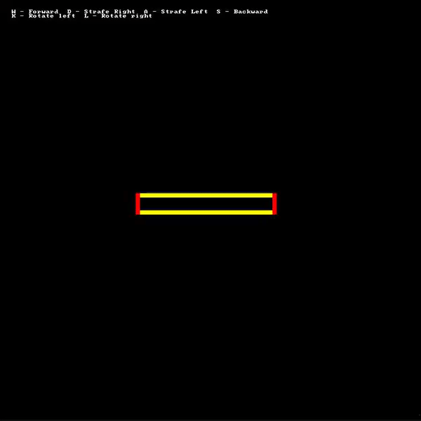

I have been experimenting with vertexes, and have come to simulate 3rd, 2nd, and 1st person view. I'm having trouble with a piece of the algorithm though.
I need to clip the image from view if it is NOT in front of the player IF the view is 1st person (line12)
Clipping the image out of view under this circumstance isn't too hard, though it includes the Cross Vector Product algorithm(line181), and I don't fully understand its black magic, yet.
The issue is the 2 of the arguments I need to pass are -0.0001, and 0.0001(line109-113), but I've become unsuccessful in trying to work around this. Perhaps I'm just tired.
YES ITS COMMENTED
Code: Select all
@echo off & setlocal enableDelayedExpansion
if "%~1" neq "" goto :%~1
REM INITIALIZE -----------------------------------------------------------------------------
call :macros
title Vertex rotation test
mode 100,100
REM CHANGE ME TO VALUE ( 1 - 1st Person; 2 - 2nd Person; 3 - 3rd Person )
set /a "view=1"
REM -----------------------------------------------------
rem The coordinates of the player
set /a "px=45", "py=45", "P_ANGLE=0"
rem The end coordinates for the line segment representing a "wall"
set /a "vx1=70", "vy1=20"
set /a "vx2=70", "vy2=70"
REM ----------------------------------------------------------------------------------------
if exist "%temp%\%~n0_signal.txt" del "%temp%\%~n0_signal.txt"
"%~F0" Controller WASDKL >"%temp%\%~n0_signal.txt" | "%~F0" ENGINE <"%temp%\%~n0_signal.txt"
:ENGINE
for /l %%# in () do ( set /a "frame+=1"
rem User Controller
set "com=" & set /p "com="
%= Calculate movement =%
if /i "!com!" equ "s" ( set /a "px-=3 * !cos(x):x=P_ANGLE!", "py-=3 * !sin(x):x=P_ANGLE!"
) else if /i "!com!" equ "w" ( set /a "px+=3 * !cos(x):x=P_ANGLE!", "py+=3 * !sin(x):x=P_ANGLE!"
) else if /i "!com!" equ "a" ( set /a "px-=3 * !sin(x):x=P_ANGLE!", "py-=3 * !cos(x):x=P_ANGLE!"
) else if /i "!com!" equ "d" ( set /a "px+=3 * !sin(x):x=P_ANGLE!", "py+=3 * !cos(x):x=P_ANGLE!"
) else if /i "!com!" equ "k" ( set /a "P_ANGLE-=10"
) else if /i "!com!" equ "l" ( set /a "P_ANGLE+=10"
)
REM BUILD VIEW ----------------------------------------------------------------------------
%= lx ly are the end of the player pointer =%
set /a "lx=7 * !cos(x):x=P_ANGLE! + px", "ly=7 * !sin(x):x=P_ANGLE! + py"
%= Transform the vertexes relative to the player =%
set /a "tx1=vx1 - px", "ty1=vy1 - py"
set /a "tx2=vx2 - px", "ty2=vy2 - py"
%= Rotate them around the players view =%
set /a "tz1=tx1 * !cos(x):x=P_ANGLE! + ty1 * !sin(x):x=P_ANGLE!"
set /a "tz2=tx2 * !cos(x):x=P_ANGLE! + ty2 * !sin(x):x=P_ANGLE!"
set /a "tx1=tx1 * !sin(x):x=P_ANGLE! - ty1 * !cos(x):x=P_ANGLE!"
set /a "tx2=tx2 * !sin(x):x=P_ANGLE! - ty2 * !cos(x):x=P_ANGLE!"
%= Translate into view =%
set /a "sz1=50 - tz1", "sz2=50 - tz2", "sx1=50 - tx1", "sx2=50 - tx2"
REM BUILD VIEW ----------------------------------------------------------------------------
if !view! equ 3 (
%= Draw the Absolute Map =%
%= 3rd Person View =%
%line% %vx1% %vy1% %vx2% %vy2% Û 11
%line% !px! !py! !lx! !ly! Û 255
%fastCircle% !px! !py! 2 2 330
%= ----------------------------------------------------------------------------------- =%
) else if !view! equ 2 (
%= Draw the Transformed Map =%
%= 2nd Person View =%
%line% !sx1! !sz1! !sx2! !sz2! Û 11
%line% 50 50 50 43 Û 255
%fastCircle% 50 50 2 2 330
%= ----------------------------------------------------------------------------------- =%
) else if !view! equ 1 (
if !tz1! gtr 0 ( set "b1=0" ) else ( set "b1=1" )
if !tz2! gtr 0 ( set "b2=0" ) else ( set "b2=1" )
set /a "bool=(b1|b2)"
REM IMPORTANT!!!
rem All commented code here is the Cross Vector Product Algorithm in the works.
rem including INTERSECT macro
REM if !bool! equ 1 (
rem v-------------------{ These values SHOULD be (according to the algorithm)
rem v-----------------{ -0.0001 0.0001
%intersect% !tx1! !tz1! !tx2! !tz2! -1 1 -20 5 ix1 iz1
rem v-------------------{ These values SHOULD be (according to the algorithm)
rem v-----------------{ 0.0001 0.0001
%intersect% !tx1! !tz1! !tx2! !tz2! 1 1 20 5 ix2 iz2
REM if !tz1! leq 0 if !iz1! gtr 0 ( set /a "tx1=ix1", "tz1=iz1" ) else ( set /a "tx1=ix2", "tz1=iz2")
REM if !tz2! leq 0 if !iz1! gtr 0 ( set /a "tx2=ix1", "tz2=iz1" ) else ( set /a "tx2=ix2", "tz2=iz2")
%= Draw the Perspective-Transformed Map =%
set /a "x1=-tx1 * 16 / tz1", "y1a=-50 / tz1", "y1b=50 / tz1"
set /a "x2=-tx2 * 16 / tz2", "y2a=-50 / tz2", "y2b=50 / tz2"
%= Translate into view =%
for %%a in (x1 x2 y1a y1b y2a y2b) do set /a "%%a=50 + %%a"
%= 1st Person View =%
%= top (1-2 b) =%
%line% !x1! !y1a! !x2! !y2a! Û 11
%= bottom (1-2 b) =%
%line% !x1! !y1b! !x2! !y2b! Û 11
%= left (1) =%
%line% !x1! !y1a! !x1! !y1b! Û 9
%= right (2) =%
%line% !x2! !y2a! !x2! !y2b! Û 9
REM )
%= ----------------------------------------------------------------------------------- =%
)
rem display everything using VT100 2J sequence to clear the screen first.
<nul set /p "=%ESC%[2J!screen!" & set "screen="
)
exit
:Controller
( for /l %%# in () do ( for /f "tokens=*" %%a in ('choice /c:%~2 /n') do ( <nul set /p ".=%%a" ) ) )
:macros
set ^"LF=^
^" Above empty line is required - do not remove
set ^"\n=^^^%LF%%LF%^%LF%%LF%^^"
for /F %%a in ('echo prompt $E^| cmd') do set "ESC=%%a"
<nul set /p "=!esc![?25l"
rem This may seem redundant, however, I'm trying to follow an algorithm.
rem FNcross x1 y1 x2 y2 RETURNVAR
set FNcross=for %%# in (1 2) do if %%#==2 ( for /f "tokens=1-5" %%1 in ("^!args^!") do (%\n%
set /a "%%~5=%%~1*%%~4 - %%~2*%%~3"%\n%
)) else set args=
rem CROSS VECTOR PRODUCT algorithm
rem intersect x1 y1 x2 y2 x3 y3 x4 y4 RETURNVAR RETURNVAR
set intersect=for %%# in (1 2) do if %%#==2 ( for /f "tokens=1-10" %%a in ("^!args^!") do (%\n%
%= x1-a y1-b x2-c y2-d x3-e y3-f x4-g y4-h x-i y-j =%%\n%
!^FNcross^! %%a %%b %%c %%d FNx%\n%
!^FNcross^! %%e %%f %%g %%h FNy%\n%
set /a "_t1=%%a-%%c", "_t2=%%c-%%d", "_t3=%%e - %%g", "_t4=%%f-%%h"%\n%
for /f "tokens=1-4" %%1 in ("^!_t1^! ^!_t2^! ^!_t3^! ^!_t4^!") do ^!FNcross^! %%1 %%2 %%3 %%4 det%\n%
for /f "tokens=1-6" %%1 in ("^!_t1^! ^!_t2^! ^!_t3^! ^!_t4^! ^!FNx^! ^!FNy^!") do (%\n%
^!FNcross^! %%5 %%1 %%6 %%3 _x1%\n%
set /a "%%i=_x1 / det"%\n%
^!FNcross^! %%5 %%1 %%6 %%3 _y1%\n%
set /a "%%j=_y1 / det"%\n%
)%\n%
)) else set args=
rem ------------------------------------------------------------------------------------------
rem %plot% x y 0-255 0-255 CHAR
set plot=for %%# in (1 2) do if %%#==2 ( for /f "tokens=1-5" %%1 in ("^!args^!") do (%\n%
set "screen=^!screen^!!esc![%%2;%%1H!esc![38;5;%%3m!esc![48;5;%%4m%%~5!esc![0m"%\n%
)) else set args=
rem %fastCircle% x y ch cw color screenID
set fastCircle=for %%# in (1 2) do if %%#==2 ( for /f "tokens=1-7" %%1 in ("^!args^! sin^(x^) cos^(x^)") do (%\n%
for /l %%a in (0,30,360) do (%\n%
set /a "xa=%%~3 * ^!%%~7:x=%%a^! + %%~1"%\n%
set /a "ya=%%~4 * ^!%%~6:x=%%a^! + %%~2"%\n%
for /f "tokens=1,2" %%x in ("^!xa^! ^!ya^!") do ^!plot^! %%x %%y %%~5 0 Û%\n%
)%\n%
)) else set args=
set line=for %%# in (1 2) do if %%#==2 ( for /f "tokens=1-6" %%1 in ("^!args^!") do (%\n%
if "%%~6" equ "" ( set "hue=30" ) else ( set "hue=%%~6")%\n%
set /a "xa=%%~1", "ya=%%~2", "xb=%%~3", "yb=%%~4", "dx=%%~3 - %%~1", "dy=%%~4 - %%~2"%\n%
for /f "tokens=1-2" %%6 in ("^!dx^! ^!dy^!") do (%\n%
if %%~7 lss 0 ( set /a "dy=-%%~7", "stepy=-1" ) else ( set "stepy=1" )%\n%
if %%~6 lss 0 ( set /a "dx=-%%~6", "stepx=-1" ) else ( set "stepx=1" )%\n%
set /a "dx<<=1", "dy<<=1"%\n%
)%\n%
for /f "tokens=1-9" %%a in ("^!dx^! ^!dy^! ^!xa^! ^!xb^! ^!ya^! ^!yb^! ^!stepx^! ^!stepy^! ^!hue^!") do (%\n%
if %%~a gtr %%~b (%\n%
set /a "fraction=%%~b - (%%~a >> 1)"%\n%
for /l %%x in (%%~c,%%~g,%%~d) do (%\n%
for /f "tokens=1" %%6 in ("^!fraction^!") do if %%~6 geq 0 set /a "ya+=%%~h", "fraction-=%%~a"%\n%
set /a "fraction+=%%~b"%\n%
for /f "tokens=1" %%6 in ("^!ya^!") do (%\n%
if 0 leq %%x if %%x lss 199 if 0 leq %%~6 if %%~6 lss 199 ^!plot^! %%x %%~6 %%i 0 %%~5%\n%
)%\n%
)%\n%
) else (%\n%
set /a "fraction=%%~a - (%%~b >> 1)"%\n%
for /l %%y in (%%~e,%%~h,%%~f) do (%\n%
for /f "tokens=1" %%6 in ("^!fraction^!") do if %%~6 geq 0 set /a "xa+=%%~g", "fraction-=%%~b"%\n%
set /a "fraction+=%%~a"%\n%
for /f "tokens=1" %%6 in ("^!xa^!") do (%\n%
if 0 leq %%~6 if %%~6 lss 199 if 0 leq %%y if %%y lss 199 ^!plot^! %%~6 %%y %%i 0 %%~5%\n%
)%\n%
)%\n%
)%\n%
)%\n%
)) else set args=
set /a "PI=(35500000/113+5)/10, PI_div_2=(35500000/113/2+5)/10, PIx2=2*PI, PI32=PI+PI_div_2"
set "_SIN=a-a*a/1920*a/312500+a*a/1920*a/15625*a/15625*a/2560000-a*a/1875*a/15360*a/15625*a/15625*a/16000*a/44800000"
set "SIN(x)=(a=(x * 31416 / 180)%%62832, c=(a>>31|1)*a, a-=(((c-47125)>>31)+1)*((a>>31|1)*62832) + (-((c-47125)>>31))*( (((c-15709)>>31)+1)*(-(a>>31|1)*31416+2*a) ), %_SIN%) / 10000"
set "COS(x)=(a=(15708 - x * 31416 / 180)%%62832, c=(a>>31|1)*a, a-=(((c-47125)>>31)+1)*((a>>31|1)*62832) + (-((c-47125)>>31))*( (((c-15709)>>31)+1)*(-(a>>31|1)*31416+2*a) ), %_SIN%) / 10000"
set "_SIN="
set "Abs(x)=(((x)>>31|1)*(x))"
goto :eof
2nd person

1st person
